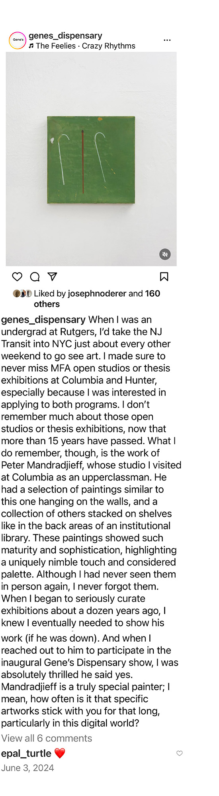
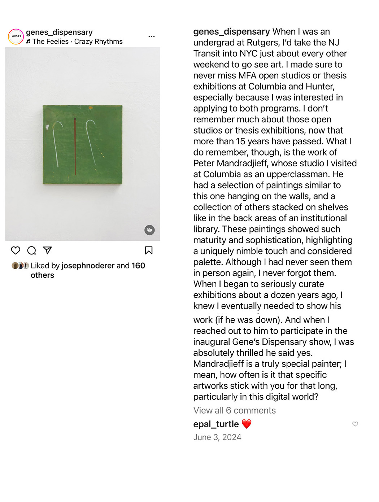

Roundabout Walkabout
Reflection on the show by Keith Varadi


Between Form and Meaning
Review of the Part and Parcel exhibition, by Todd Keyser
The Brooklyn-based painter and Pittsburgh native Peter Mandradjieff is exhibiting eight new paintings at the Mine Factory, directed by Mia Henry. The solo exhibition, Part and Parcel runs from September 27th to October 3rd, 2014. Mandradjieff's work is worth seeing for all those who are interested in classic and pastoral developments in abstract painting. These abstract paintings function in the gap between what can be seen and yet paradoxically obscured.
For Peter Mandradjieff, serendipity can be a purposeful experience in the construction of painting. What makes Mandradjieff's process of incidental painting interesting is its ties to Romanticism. The use of fragmentation in the Romantic tradition holds an important place in the construction of a work of art. The fragment (or part) gained a new status that became equal to the finished work of art and not concerned with an organized unity but rather with multiple views that can be expressed as a value in and of itself. This allows for Mandradjieff's work to be connected in a loose way rather than in a tightly programmatic one, making each painting autonomous to the group.
Two paintings in the exhibition, both titled Fall, measuring at 72 x 48 inches each, utilize a loose grid that grounds the paintings in an organized geometric whole. Fall (Full), my favorite of the two, is a sublime explosion of color, similar to a canopy of trees at the height of the leaf peeping season. Its excellent graphic quality heightens the painter's use of white oil paint that partially blocks out the color underneath. The other painting, Fall (Edit) is a wonderful, sparsely-painted white canvas that is punctuated with occasional poetic moments of bright prismatic colors. As a result this painting is more sensitive, calm and less forceful than Fall (Full). The painting takes on a quality that is similar to that wonderful transition between the fall and winter months.
So The Seagull Left, puzzles me the most. The content of this painting is not immediately apparent, unlike his other paintings, which repeatedly exhibit important relationships between his titles and their formal qualities. The painting is dark with an abstracted figure in the center that is hard to make out. It functions as something with and without form. It feels paradoxical- intentional and seemingly random. Agitated crimson marks run along the fuzzy contours of the painting's centralized yet indefinite form. The painting could be interpreted as an allegory of a play by Anton Chekhov (Russian, 1860-1904) called The Seagull. A play well known for its difficulty. The Seagull follows a love triangle between three of its main characters, caught up in achieving fame and mastery of their own creativity, only to fail to meet these aspirations. The dead seagull becomes a loaded symbol for these unrealized hopes.
Peter Mandradjieff's paintings require time and do not give immediate meaning to the viewer. These paintings make the spectator work a little bit. They are strikingly beautiful and achieve subtle affects that are well worth long glances, especially others in Deli Flowers, Quilt, Lost Painting, Dumpster, and Old Studio. Mandradjieff's abstract paintings meander, hovering between form and meaning in visual delight. This exhibition comes down on Friday, October 3rd.
Peter Mandradjieff received his MFA from Columbia University, School of Art in New York City and completed his BFA at Carnegie Mellon University in Pittsburgh, Pennsylvania. The painter resides in Brooklyn, New York.
Todd Keyser is a painter and curator. Formally, the assistant director of Gross McCleaf Gallery in Philadelphia, he has recently relocated to Pittsburgh. Other reviews can be found on Title-Magazine and Bmore Art blogs. Keyser's work was recently exhibited in a group show at SPACE, organized by Kristen Letts Kovak in the downtown Cultural District.

Fall (edit), Old Studio, So the Seagull Left, and Dumpster, installed for Part and Parcel exhibition